Frequently Asked Questions
Everything you need to know about hosting, joining, and playing on Pokerrrr 2 — organized by topic.
Host Games
01How do I host a private poker game and invite friends to join on Pokerrrr 2?
To host a private poker game with friends on Pokerrrr 2, follow these steps:
- Open the app and tap the "Friendly & Club" tab at the bottom of the screen
- Select "Host" to create a new private game
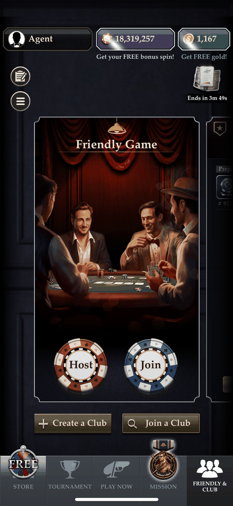
- Choose your game type — Texas Hold’em, OFC, Short Deck, Omaha, or Sit & Go
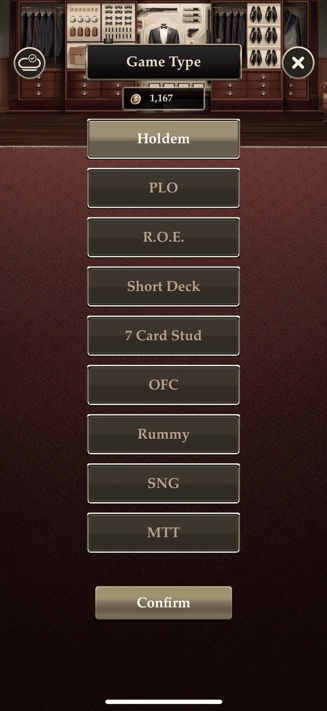
- Set your buy-in amount, blind structure, and number of seats (2–10 players)
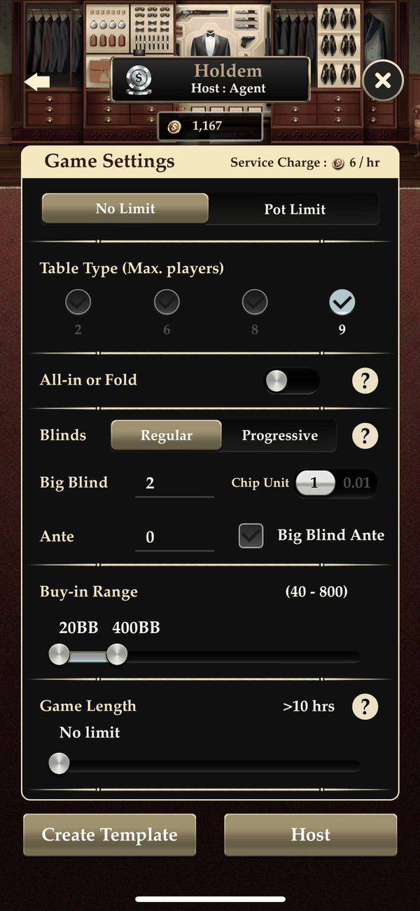
- Share the unique game code with friends so they can join
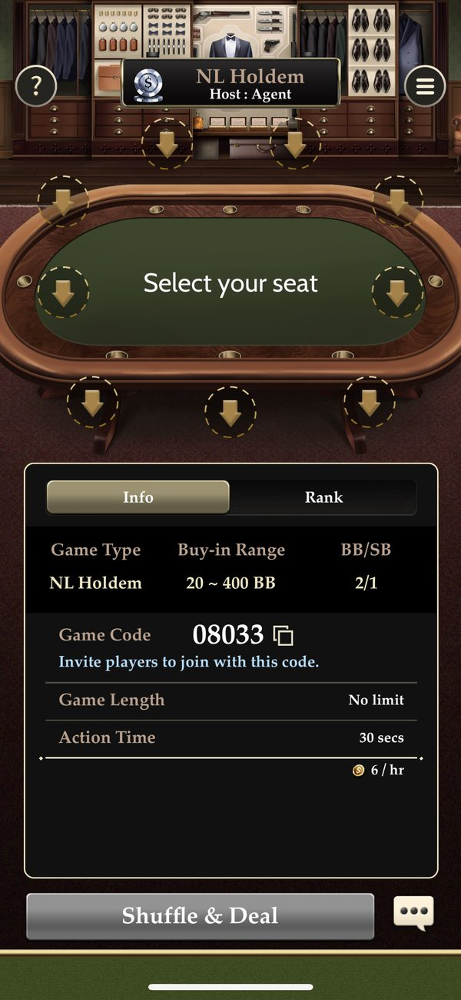
Pokerrrr 2 is free to play with no real money required. All hand histories are saved automatically so you can review past games anytime.
02How can I assign table manager(s)?
- Start your club game — only club games have the option to assign table managers.
- Once the club game is hosted, open the side menu and tap "Assign Manager".
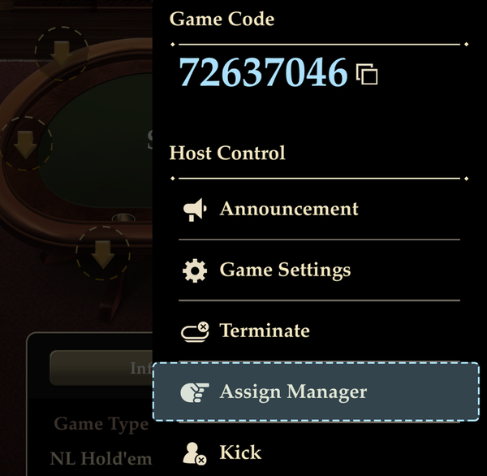
- Select the desired member(s) to become the table manager for the game.
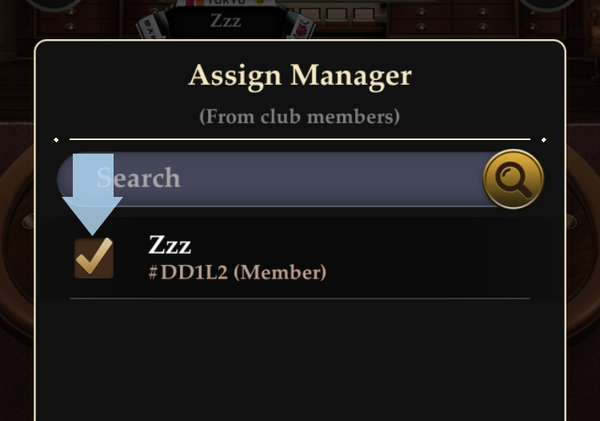
03How do I host multiple games at the same time?
- Host your first game. From there you can tap "Leave" located in the side menu.
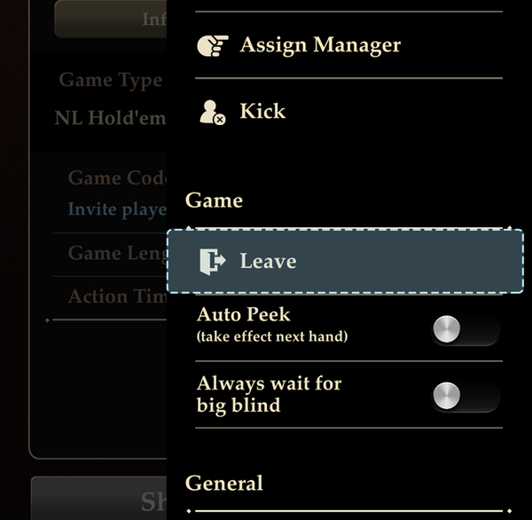
- A pop-up confirms whether you want to leave while your game continues running.
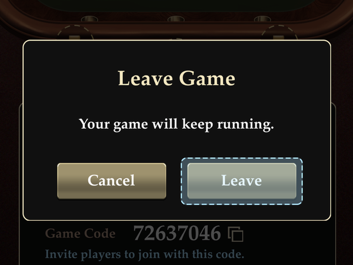
- From here you can host more than one game simultaneously.
04How do I host a rebuy multi-table tournament?
- Tap "Host" from either the Friendly Game or within your club.
- Select the ‘MTT’ tab.
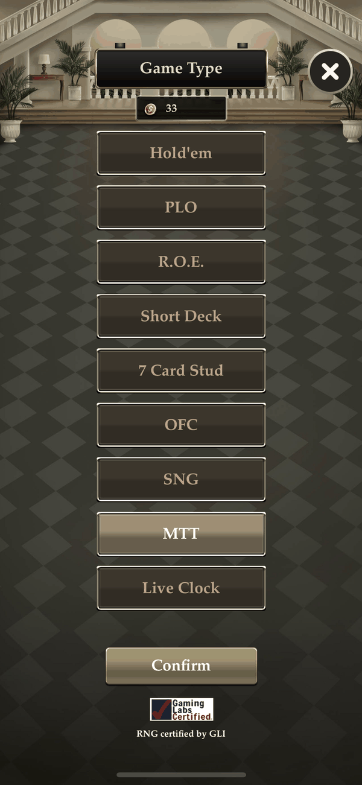
- Choose the level of ‘Rebuy Period’.
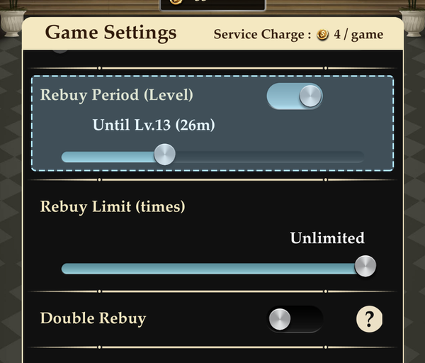
- The rebuy button will be shown until the designated level ends.
Example: level 10 with 5 mins per level = 10 × 5 mins = 50 mins rebuy time.
05How much does it cost to host games?
Hosting games charges Gold (Pokerrrr’s in-game currency).
- Non-tournament games charge gold per hour; tournament games charge gold per game.
- The amount is calculated using a formula based on: starting chips, interval, number of tables, buy-in ticket, late registration level, and rebuy period level.
Game Rules
01Does the host have to play?
No. The host can opt to sit out if they wish.
02What’s the difference between a club game and non-club game?
- Club game: only club members may join.
- Non-club game: anyone with the game code can join.
03What controls does a table manager have?
- Shuffle & Deal
- Pause games
- Terminate games
- Confirm or reject buy-in requests
- Adjust the game settings, including game length, blinds, and tips
04What happens if I’m disconnected on my turn?
If you were present at the start of your turn and then disconnected, you’ll be granted an additional 20 seconds of action time. If you were absent or not connected at the start of your turn and then disconnected, you’ll immediately check/fold.
05What is the maximum number of games I can host?
Without upgrades, players can only host two games at a time. After upgrading to Ruby VIP, players can host up to five games at a time.
06What does buy-in confirmation do?
When buy-in confirmation is enabled, the following require approval from the host or table manager:
- The player’s participation in the game
- Approval of the player’s buy-in request after they’re accepted into the game
07How is "hit and run" prevented?
If a player leaves the table and rejoins, they need to buy in with exactly the same amount they left with — no more, no less.
08What is our Anti-Abuse Policy?
The Anti-Abuse Policy was released to help combat potential inappropriate use of our service. Read the full policy here.
09What are the rules for 4-card PLO?
4-card PLO (Pot-Limit Omaha) plays similarly to Hold’em in that it’s a "flop" game using community cards. The difference: players are dealt four hole cards and must use exactly two of them with three of the five community cards to make their five-card hand.
10What are the rules for OFC?
In Open-Face Chinese Poker (OFC), players take turns drawing cards from a single deck to build the best hand possible. The game is scored in points, not bets — each player arranges 13 cards into three hands (top, middle, bottom), which are then compared using standard poker hand rankings.
Royalties for the bottom, middle and top hands:
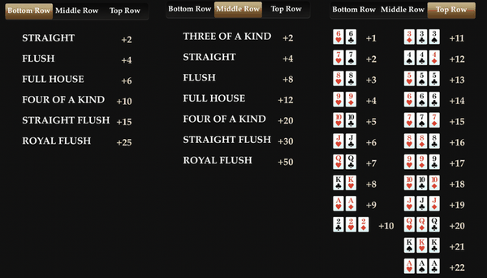
Your chips are only deducted when the game finishes — leaving mid-game doesn’t deduct chips until the entire game is over.
11What is R.O.E.?
Round of Each (R.O.E.) rotates between a series of selected games — we offer NL Hold’em, Short Deck, and a variety of PLO. A round is complete once every player has been assigned to the dealer position one time.
Join Games
01How can I join my friend’s game?
- Once your friend has hosted a game, they’ll be given a "Game Code".
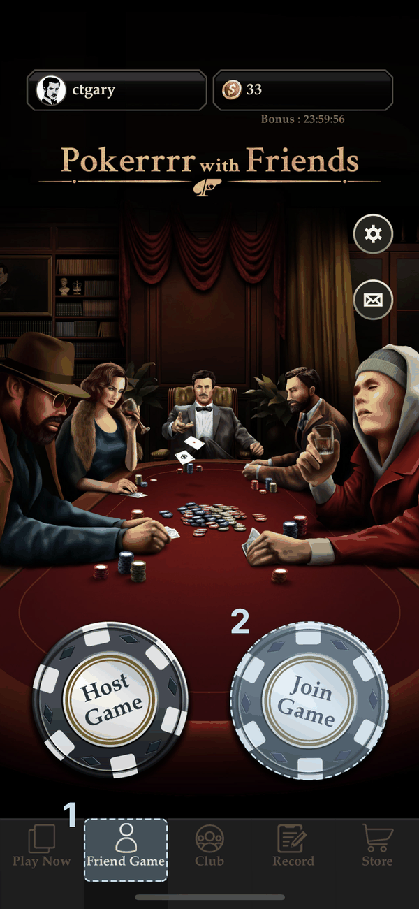
- After they send you the Game Code, enter it after tapping "Join".
02Can I play Pokerrrr 2 with random players?
Yes — the "Play Now" tab lets you join a variety of game types in our Global Pokerrrr Challenge, matched with poker players across the world.
03Can I queue for a table once it’s full?
Yes, provided the host has queueing turned on. If buy-in confirmation is also on, your buy-in will need to be approved before you’re added to the queue.
Manage Clubs
01How do I set up a club?
- In the "Friendly & Club" tab, tap "+ Create / Join a Club" at the bottom of the screen.
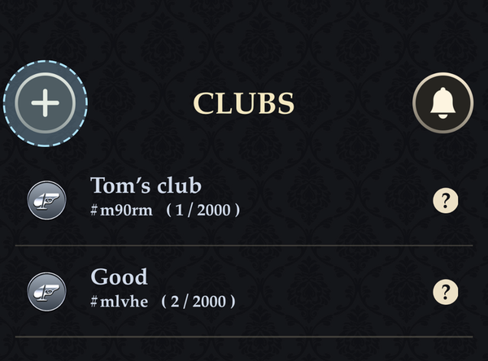
- Tap the "Create" tab in the top right and fill in the "Name" and "Description" fields.
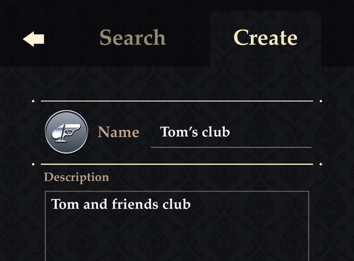
- Once members join, you can assign club manager(s) to decide who’s allowed to host games.
02How can I assign club managers?
- Enter your club page and select the "Members" tab.
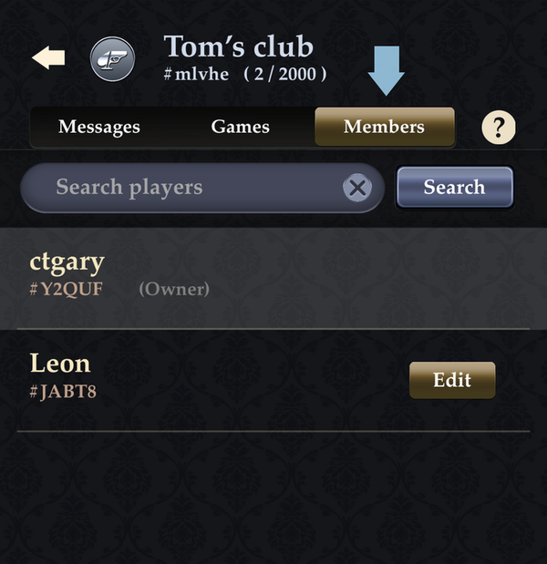
- Choose the player to promote and tap "Edit".
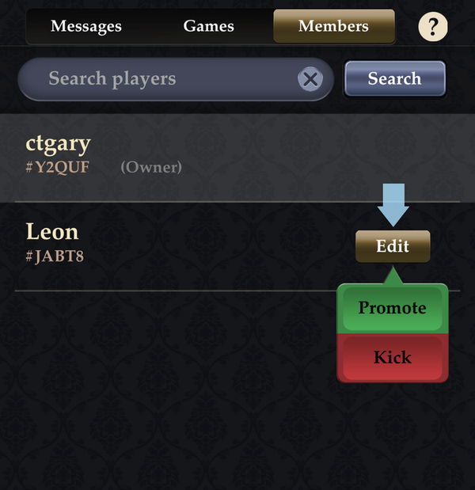
- Only the club owner can promote a member to club manager.
- A club manager can later be promoted to club owner — the original owner is then demoted to manager.
03How can I allow other club members to host games?
- Select your club’s information icon.
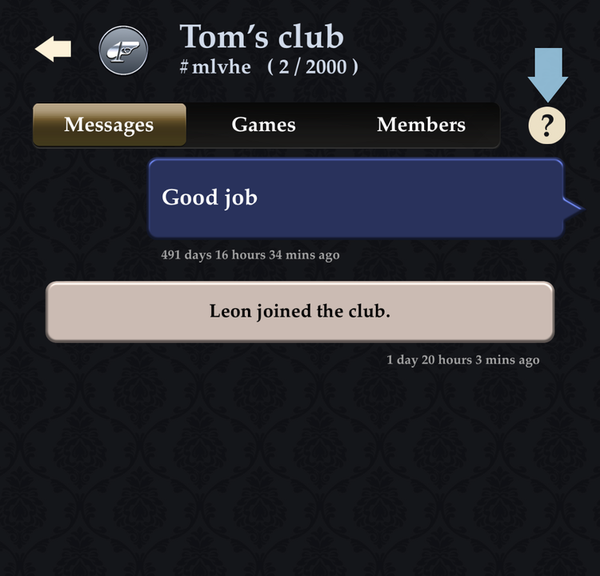
- Tap "Edit".
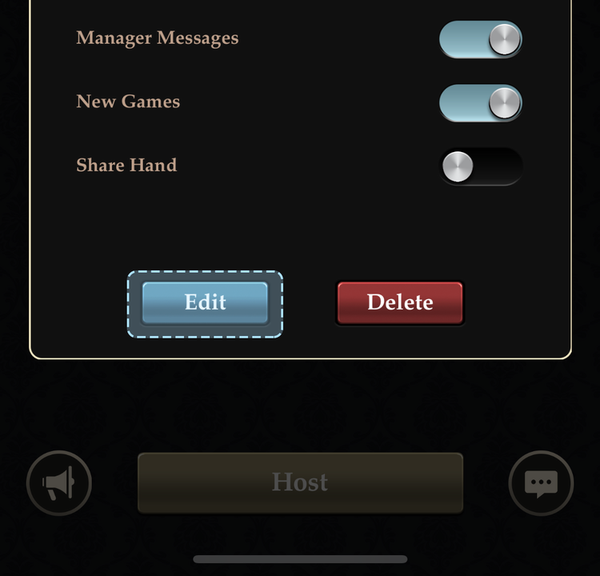
- Choose from three host-permission levels — Owner (only owners host), Manager (managers & owners host), or Member (any member can host).
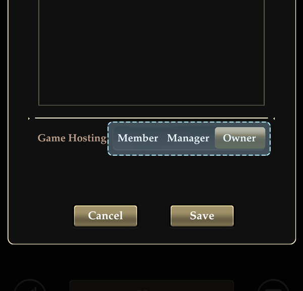
Other
01Pokerrrr 2 system requirements
iOS 11.0 or later · Android 5.0 (Lollipop) / Fire OS 5.0 or later. Minimum requirements may change over time as the app is updated.
02How are the cards shuffled?
A standard 52-card deck is shuffled using an independently RNG-certified algorithm — Pokerrrr’s parent, PT. Farm Entertainment, holds a Random Number Generator certification from Gaming Laboratories International (GLI). Cards are shuffled in random order, then dealt to each seat in the order shuffled — the algorithm has no knowledge of poker hands or the players it’s dealing to.
03Is there any chance of rigged cards or bias toward players?
No. The random shuffling and dealing of cards can’t be influenced by anyone.
04Where are Pokerrrr’s servers located?
Our servers are located worldwide.
05How secure is our service?
A player’s hole cards are dealt only to their own device — no other device receives that information unless the hand is revealed.
06Can I find out a certain player’s information?
We can’t reveal any player’s information to a third party due to our privacy policy. Turn on buy-in confirmation or host games within your club to help ensure you’re only playing with people you know.
07How can I use the same account on different devices?
Sync your guest account with an external social profile (Google, Facebook, or Apple) — this secures your progress and lets you use the same account across devices.
08How do I switch the Facebook account linked to my Pokerrrr account?
- Sign into the Facebook account you no longer want linked to Pokerrrr 2.
- Click "Settings" in the upper right, then "Apps" in the left menu.
- Find Pokerrrr 2 in the list, select it, and click "Remove".
- Sign out, then sign into the Facebook account you want to link instead.
- Back in Pokerrrr 2, tap the gear icon, then "Facebook Login", and follow the prompts to approve the new connection.
Gold
01What do I use Gold for?
Gold is Pokerrrr’s in-game currency. Use it to:
- Host games — 6 gold per hour
- Export game records — 1 gold per export
- Buy Global Pokerrrr Challenge chips — 1 gold for 1,000 chips, or 20 gold for 24,000 chips
- Purchase store items — a 3-hour pass for 12 gold, 30-day Game Records for 18 gold, or a 30-day VIP package for 120 gold
02How do I refer a friend for bonus rewards?
- Earn 10,000 bonus chips for every new friend you invite who links their account via Facebook.
- Tap "Add New Friend" on the left side of the screen.
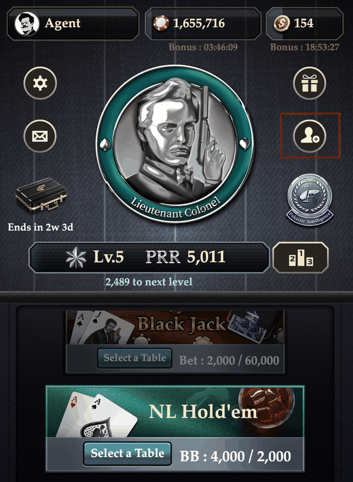
- Tap your referral code to copy and share it.
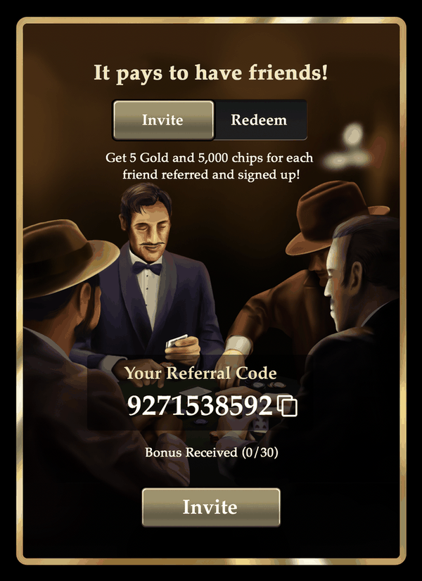
- Have your friend log into Pokerrrr 2 through Facebook and enter your code.
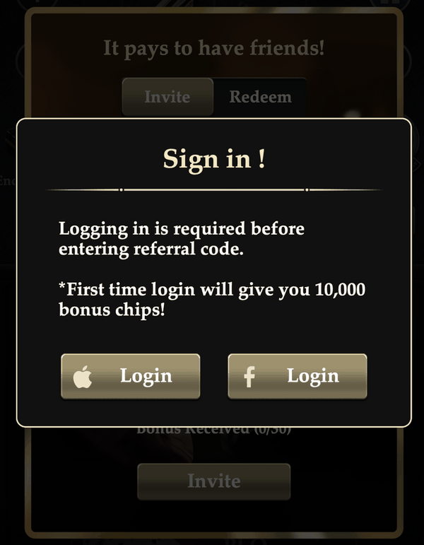
- Claim your reward every 4 hours per invite from the message icon once they connect.
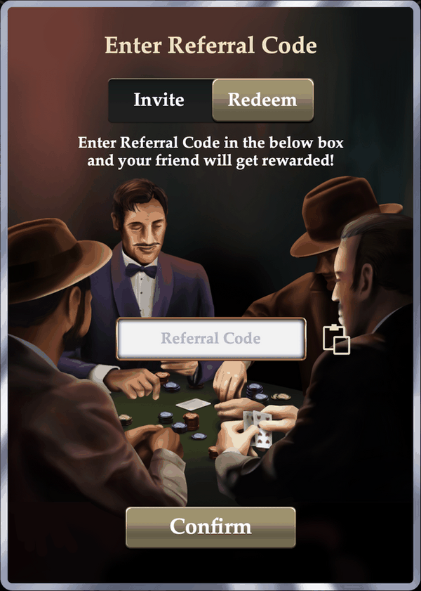
03What do I do if I haven’t received the Gold I paid for?
This can happen due to a delay between the server and the App Store / Google Play — nothing to worry about. To resolve it quickly, send us:
- Your 5-digit player ID (found on your account page, next to your name tag).
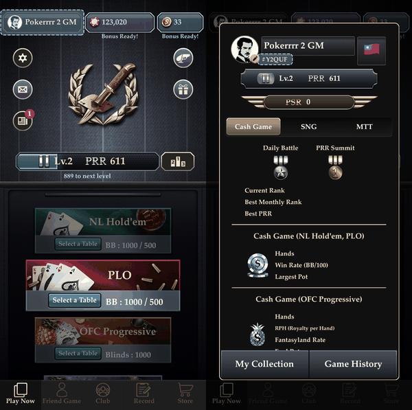
- A screenshot of the purchase receipt from the App Store or Google Play (bank statements can’t be used — they don’t show the purchase ID we need).
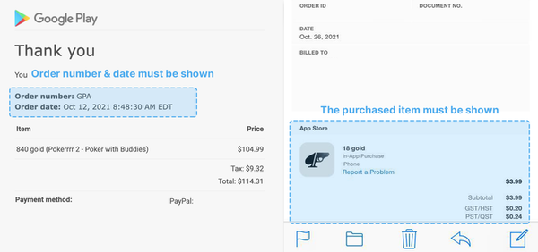
Once we have both, we’ll review and reimburse the transaction to your account.
04Can I transfer Gold or chips to a different account, or gift them to a friend?
Not currently — account-to-account transfers of gold or chips are unavailable.
Game Records
01How do I export game records as a CSV file?
To export a single game result:
- Open the Record tab
- Tap the game record you want
- Tap "Export"
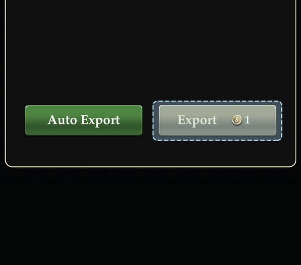
- Email the CSV file to yourself
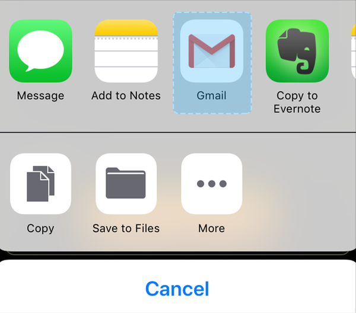
- Open the email and download the attached CSV
To export a summary of multiple results:
- Open the Record tab
- Tap the calculator icon in the top right
- Tick the records you want to export
- Tap "Pay Off", then "Export"
- Email the CSV file to yourself and download it
02How do I import my CSV file into Google Sheets?
- Open a new Google Spreadsheet, select "File" then "Import"
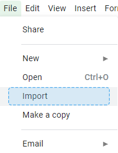
- Upload your CSV file
- Select "Custom" and type in ";" (a semicolon)
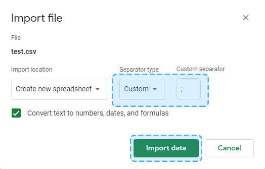
- Select "Import data"
03How long will my game records last?
Game records are kept for 90 days. Be sure to export anything you want to keep before then.
Tournament Rules
01When does hand-for-hand play start in an MTT?
Hand-for-hand play starts once 10 players remain, and ends once the final table is confirmed.
02When does the rebuy period cut off in an MTT?
For 18 or 36-player tournaments, the rebuy period cuts off once two players remain. For 90-player tournaments, it cuts off once the final table starts. It also ends after the level the host designated.
03When does late registration cut off in an MTT?
Late registration follows the same cutoff as the rebuy period: two players remaining for 18/36-player tournaments, or the final table starting for 90-player tournaments — whichever comes first, or the host-designated level.
Account
01Can I retrieve my account if my device has been reset?
If your guest account wasn’t linked to a social profile (Facebook, Apple, or Google), we unfortunately can’t retrieve it once erased. Linking a social profile is the safest way to secure access across devices.
02How do I delete an account in the app?
- Tap the gear icon in the "Play Now" tab.
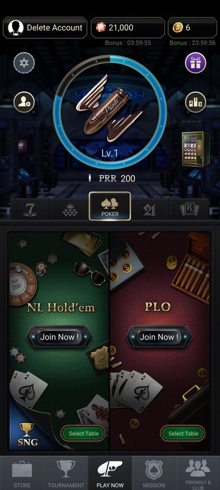
- Tap "Delete Account".
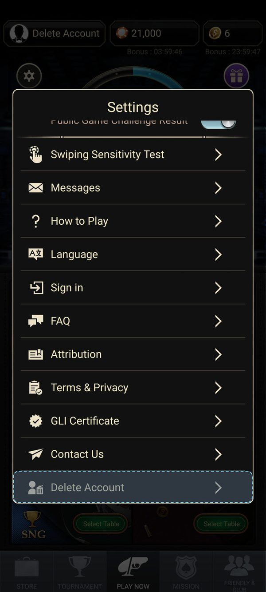
- Follow the steps in the pop-up screens to complete the request.
Once requested, deletion takes 3–5 business days and cannot be canceled or undone.
03What information is deleted vs. retained?
All information related to you, or that could be used to identify you, is deleted. The process begins three days after the request is made, and no data is stored once it’s complete.